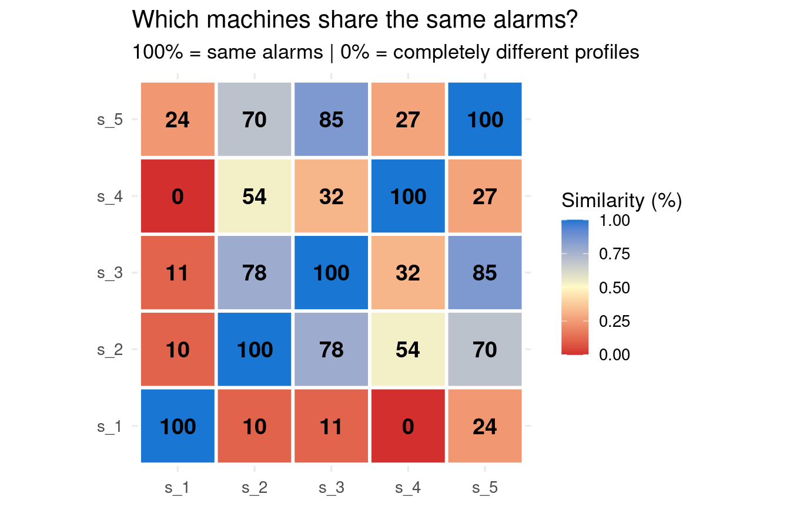

Episode 6 — The Rosetta Stone
132 alarm codes. No dictionary. But the data knows how to read them.
Five episodes of investigation — the dataset, OEE, alarm rankings, sequences, anomalies. Each episode added a piece. But we were always looking at alarms separately.
What if we looked at all of them at once?
132 codes, seen together
Which alarms tend to show up on the same days, on the same machines? A Principal Component Analysis (PCA) looks at alarm co-occurrences and finds the main directions that separate the machines.
s_1 and s_4 have 0% similarity — completely different alarm profiles. s_3 and s_5 are 85% similar. These are not five copies of the same machine.
Method note — PCA on alarm co-occurrences
For each day and machine, we record which alarms were present (yes/no). PCA finds the directions in this data that best separate the machines. The similarity score measures how much two machines share the same alarm behaviour — 100% means identical profiles, 0% means nothing in common.
The pieces fall into place
This changes how we read everything that came before.
Episode 1 said these five machines weren’t a fleet — different speeds, different histories. The PCA confirms it at the alarm level: each machine has its own failure family. Not the same breakdowns happening to five copies of the same equipment.
Episode 2 showed the s_4 paradox — 94% availability, 44% OEE. The PCA shows that s_4 has its own alarm family — a group of codes that fire together.
Episode 3 showed A_065 bursting in dense daily cycles on s_1. The PCA confirms it’s not a single alarm — A_065, A_066, A_067, A_068 belong to the same family. A whole subsystem.
Episode 5 showed each machine has its own daily rhythm. Combined with the PCA, it confirms that machines don’t just differ in which alarms they have — they differ in when they happen.
What leads to a long stop?
Now that we know each machine has its own alarm family, we can look for statistical associations within each machine. A model learns which alarms are most strongly associated with long stops — applied per machine, not globally.
| Machine | Strongest predictors of long stop |
|---|---|
| s_1 | A_065 + A_066 + A_001 |
| s_2 | A_101 + A_006 + A_001 |
| s_3 | A_101 + A_006 + A_001 |
| s_4 | A_006 + A_011 + A_012 + A_001 |
| s_5 | A_101 + A_066 |
When we stop mixing machines, the associations become clear. Each machine has its own set of predictors — different alarms, different combinations.
Method note — Bayesian network per machine
Learns which alarms are most strongly associated with long stops. Applied per machine instead of globally, the noise from other machines disappears and the structural links emerge.
The escalation path
On s_1, the model identifies a sequence: A_065 typically precedes A_001, which precedes a long stop. We can verify the order directly in the timestamps.
On burst days where both A_065 and A_001 appear, A_065 fires first 72% of the time, with a median lead of 251 minutes before A_001 shows up.
That’s a confirmed sequence — A_065 tends to precede A_001, which precedes the long stop. Turning this into an operational alert would require knowing how much time an operator needs to intervene. The data shows the sequence — the plant defines the action window.
What predicts a long stop?
Beyond alarm sequences, a broader question: can the machine’s recent behaviour predict a long stop?
On s_1, the strongest predictor is not a specific alarm code — it’s the accumulation of downtime in the last 30 minutes. A machine that has been stopping and restarting repeatedly is more likely to hit a long stop next. The pattern matters more than the individual alarm.
On s_4, no signal was found — the log alone doesn’t carry enough information to predict long stops on every machine.
The cost
| Machine | Alarm | Events | Downtime (h/yr) | OEE gain (pts) |
|---|---|---|---|---|
| s_1 | A_065 | 18879 | 428 | 11.1 |
| s_2 | A_001 | 1329 | 90 | 13.3 |
| s_3 | A_006 | 1319 | 117 | 7.7 |
| s_5 | A_101 | 8252 | 142 | 6.2 |
| s_2 | A_101 | 6987 | 67 | 9.9 |
| s_2 | A_006 | 1695 | 56 | 8.3 |
| s_3 | A_101 | 3177 | 48 | 3.2 |
| s_1 | A_066 | 3312 | 75 | 2.0 |
| s_3 | A_001 | 1296 | 41 | 2.7 |
| s_4 | A_005 | 7042 | 36 | 2.6 |
Eliminating A_065 on s_1 alone would recover 11.1 points of OEE. The gains are heavily skewed — s_1 concentrates most of the potential improvement. Tackling the entire alarm family would add up, since the alarms within a family don’t overlap in time.
The Rosetta Stone
In Episode 1, we had 132 alarm codes and no dictionary. Six episodes later, here’s what we’ve built:
- Each machine has its own alarm family. s_1 and s_4 share 0% of their alarm profiles. The codes aren’t random — they group by machine.
- Each family has a distinct behaviour. s_1’s family fires in bursts. s_3 and s_5 share similar profiles. Some alarms are common across machines.
- The statistical links are machine-specific. On s_1, A_065 precedes A_001, which precedes a long stop. On s_4, it’s a different set entirely. Mixing machines hides these associations.
- Alarm sequences have a direction. On s_1, A_065 fires before A_001 72% of the time, with a median 251-minute lead. The sequence is confirmed — making it actionable requires knowing the operator’s response time.
- The cost is quantifiable. Eliminating a single alarm family on s_1 would recover 11.1 points of OEE.
That’s the Rosetta Stone: 132 opaque codes, decoded into families, associations, escalation paths, and costs — from behaviour alone, without a dictionary.
The methodology lesson
We started by looking at everything together — all machines, all alarms. That was necessary: we needed the big picture first. But the real structure only appeared when we separated what needed to be separated.
When we don’t know where to look, we start with the whole. As differences emerge, we isolate them. The PCA told us what to separate. The per-machine analysis told us why.
What the machines are hiding
The alarms are not 132 independent problems. They organise into families that correspond to machines.
Mixing machines hides the structure. Every analysis becomes sharper when we stop pooling machines that have nothing in common.
The warning signal is in the accumulation, not in a single alarm. On some machines, the pattern of repeated stops in the last 30 minutes predicts a long stop. On others, the log alone isn’t enough.
What to do about it
Treat each alarm family as a maintenance project, not each alarm code. s_1’s signature alarms (A_065, A_066, A_067…) are a family. Fixing one without addressing the others won’t solve the problem.
Making predictions actionable requires knowing the operator’s response time. The data identifies the sequences. The plant defines how fast someone can act on them.
Next: everything in this book was built with the same set of R functions. Can we turn that into a systematic language — a grammar for asking any machine the same questions?